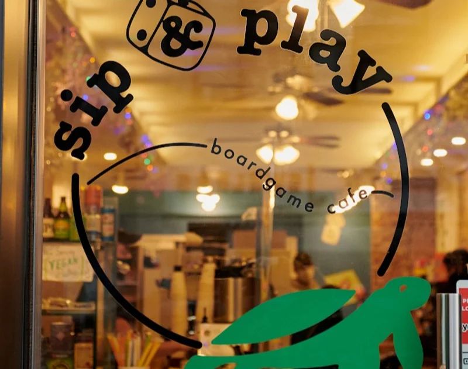

Our Story
Founder, Jonathan Li, shares a passion for board games, boba, and delicious food, so he combined them all to become Sip & Play, Park Slope’s first board game cafe. It is a straightforward concept: come in with your friends and family to play any board game from our library of 300+ games! We hope when you visit, you also enjoy our coffee, espresso, boba, sandwiches, and snacks!
Press


'BOARD GAME CAFE OPENS ON PARKS SLOPE FIFTH AVENUE'
January 2, 2020
Anna Quinn from Patch discusses how Sip & Play plans to build upon the foundation it has laid for the concept. "He spent the last few months completely revamping the space inside, adding large tables for optimal game play and building out a menu he says offers more than many board game cafes ..." "The 200-game catalogue of board games available to borrow might also grow... Customers are welcome to make suggestions about games they'd like to see him add."